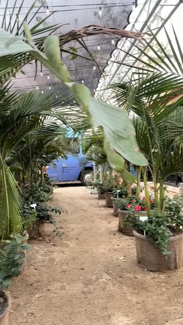
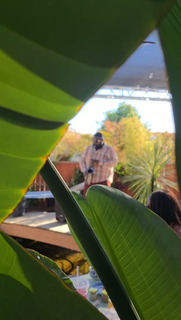
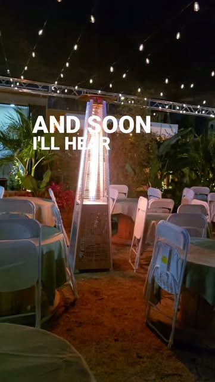
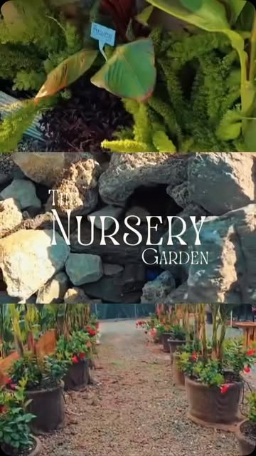
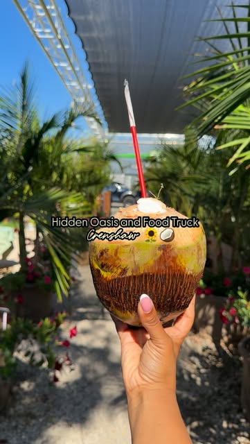
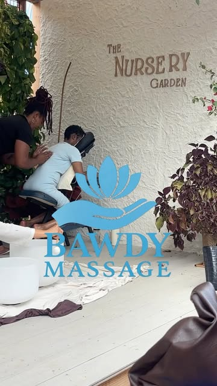
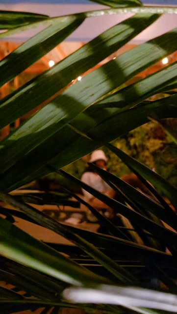
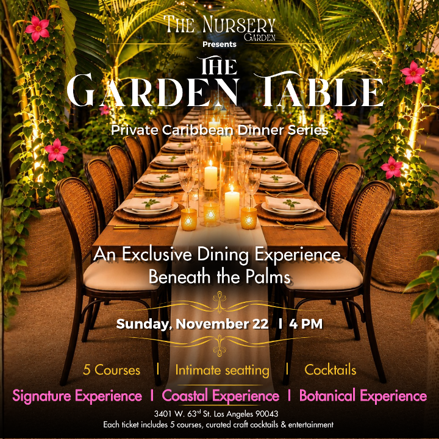
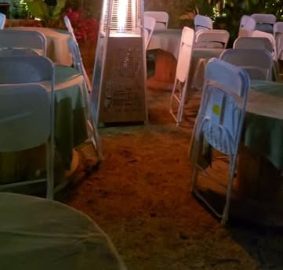

The Nursery
Garden
A hidden tropical oasis at 63rd & Crenshaw — flora, fauna, Caribbean food and good energy, grown from a vacant lot in South Los Angeles.
Open Tuesday–Sunday · 11 AM–8 PM
3401 W. 63rd St, Los Angeles 90043

For years this corner was an empty   lot. Now it is a
lot. Now it is a
The Garden
Come to wander, sit, eat and breathe. Every corner of the lot was planted by hand — gravel paths, a shaded pergola, a hammock strung between green, and the blue OnPointttt truck parked right inside.




Drag or swipe through the garden
Plant preorders
Fall in love with a plant on your walk? Preorder it and take the garden home. Ask at the truck or message @the_nursery_garden.
Kwanzaa Corner
A corner of the garden kept for culture and gathering — the garden hosts game nights, paint-and-sips, live music and community celebrations all season.
Grown by OnPointttt
The garden is the home of the OnPointttt food truck — six years of Caribbean cooking, now with a garden to eat it in.

The Garden Table
An intimate Caribbean fine-dining series beneath the palms. Five courses inspired by the flavors of the islands — gluten- and pork-free — with handcrafted cocktails and live music included.
Next seating — Sunday, November 22 · 4 PM
30% already sold
- Island Beginnings — Jerk Chicken · Mango Chutney · Crisp Tostada
- A Taste of Autumn — Golden Pumpkin Purée
- Coastal Indulgence — Spicy Ginger-Garlic Shrimp · Capellini
- The Caribbean Classic — Slow-Braised Oxtail · Coconut Risotto
- The Sweet Finish — revealed at the table
At the bar: Pineapple & Tamarind Margarita · Coconut Drop Martini · The Sorrellini · Pine-Ginger Wine Spritz
Gather in the Garden
The whole garden is bookable — birthdays, weddings, brand nights, paint-and-sips, sound baths and game nights, all under the palms with the truck serving.

- Private events — the full garden, the pergola and the stage area.
- Garden Table nights — your own five-course seating for a special occasion.
- Community days — wellness mornings, markets and celebrations.
Tell us the date and the occasion — food, drinks and the garden itself are all on site.
Inquire — contact@OnPointttt.com Call (562) 706-1608Questions
When are you open?
Tuesday to Sunday, 11 AM–8 PM. Closed Mondays. The Garden Table and special events run on their own evenings — check Instagram for the latest.
Where do I park?
We are at 3401 W. 63rd St, right at Crenshaw — street parking around the corner, and the 210 bus stops at the garden gate.
Is the food really pork-free?
Yes — nothing on the OnPointttt menu contains pork, every side is vegetarian, and The Garden Table menu is gluten- and pork-free.
How do plant preorders work?
Message @the_nursery_garden or ask at the truck during your visit, and we will have your plant ready for pickup.
Can I book the whole garden?
Yes — private events, weddings and full Garden Table seatings. Email contact@OnPointttt.com with your date and occasion.
Visit the Oasis
Hours
Tuesday–Sunday
11 AM – 8 PM
Closed Monday